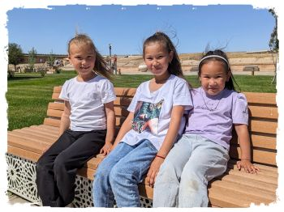

カザフスタン

| Facebookページへは各 |  |
から飛べます |
【カザフスタン1】旧首都のアルマトイに着くなり向かう先は500kmほど西の町タラズ。日本では絶滅寸前の寝台列車で9時間かけて移動します。
水井 彰さんの投稿 2024年4月29日月曜日
【カザフスタン2】シムケントはカザフスタン第三の都市。緑に満ちた幸福度の高そうな大きなまちですが、瀟洒な店の立ち並ぶ大通りを一歩入ると社会主義時代を想起させる家並みが現れます。
水井 彰さんの投稿 2024年4月30日火曜日
【カザフスタン3】今回の旅のハイライト、テュルキスタンにやってきました。 これまでの大都市とは異なり素朴な風情の地方都市で、陽気な人たちがバザールに溢れかえっています。その一方で郊外の遺跡には人影が皆無。かつてのまちと現在のまちの対比があまりに鮮やかでした。
水井 彰さんの投稿 2024年5月1日水曜日
【カザフスタン4】国民に渡航制限がかかっていたソ連時代のムスリムにとってメッカに代わる巡礼先であったテュルキスタン。その支柱たるホージャ・アフマド・ヤサウィー廟は世界遺産に登録されています。今でも多くの人が訪れており賑やかなことこの上なし。
水井 彰さんの投稿 2024年5月3日金曜日
【カザフスタン5】アルマトイから200kmほど離れたチャリンキャニオン国立公園は必見とされる景勝地ですが、個人で行くのは困難なので一昨日現地ツアーを申し込みました。 集合時間は朝5時。集合場所の近くに宿をとり、3時半に起きて臨みました。
水井 彰さんの投稿 2024年5月6日月曜日
帰国便への乗継ぎに韓国で10時間の空きがありました。行きは仁川で一泊したので帰りはソウルまで出るつもりでしたが生憎の雨模様。 どうしたものかと思いながらイミグレへ向かっているとき目に入ったのが、"FREE KOREA TRANSIT TOUR"の掲示でした。
水井 彰さんの投稿 2024年5月8日水曜日